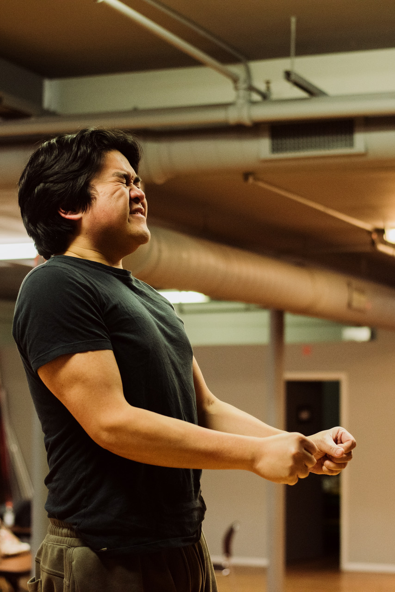
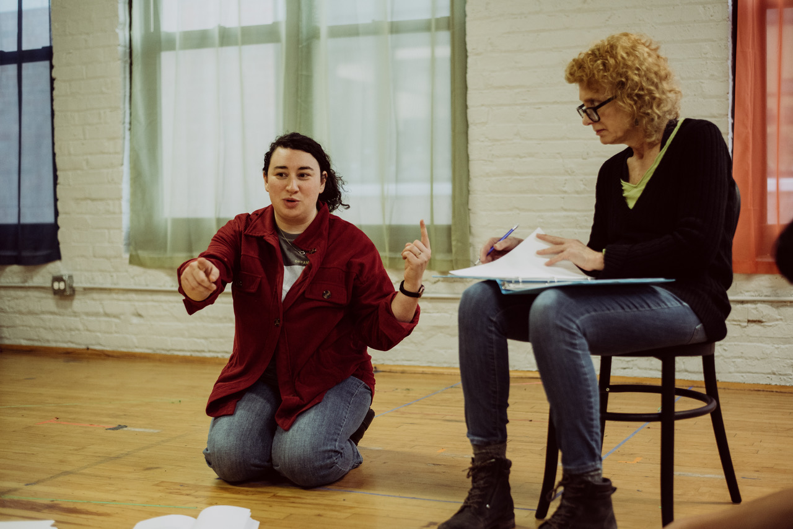
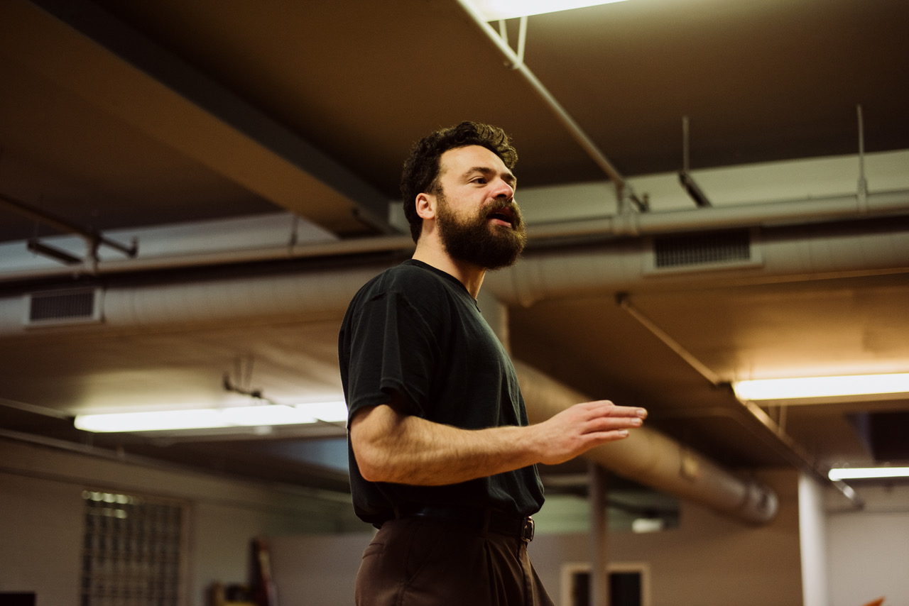

Concentration imagines a young poet in a World War II death camp, sharing his experience through 50 short poems voiced by four actors and serving as a kind of journal — an imagined response to all-too-real yet unthinkable events. The production features striking visual effects and original music by Cherise Leiter, performed live by four musicians: violin, cello, clarinet, and voice.
Award-winning poet and author Arne Weingart originally wrote and published Concentration in 2023 and adapted it in 2024 for an initial staged reading in Denver. Concentration was subsequently staged in a full production at the 2024 Rhinoceros Theater Festival (Rhino Fest) in Chicago. Weingart has several published poetry collections, and his work appears in numerous literary journals. Weingart said, "Concentration is a dramatic meditation on keeping oneself alive, body and soul, as though our uncertain past were able to speak with clarity and compassion to our uncertain present."

Speaking with Weingart brought alive creativity's path and how storytelling encourages a writer to gather images from many sources. He spoke to us about his parents who were Polish immigrants who came to Nashville in the later 1920s and 1930s and established a small tailor shop not far from Centennial Park and Vanderbilt University.
"My father went from South America to Cuba to Canada in search of work before he heard of employment in Nashville. He had married my mother in Toronto. He was the only Jewish tailor in Nashville at the time and ultimately was able to bring his four younger brothers over. With not many exceptions, my great-grandparents, grandparents, uncles, aunts, great-uncles and aunts, and many cousins who remained were all exterminated. These are the people I came to know only in photographs.
"My parents, like many of their generation, were reluctant to talk about what they had lost and the ways they had lost it. But I was obsessed with the Holocaust almost since I first began to read. I went to Hebrew School but found I needed more factual, cultural and historic information."
During COVID, Weingart found that in that sequestered time he had the opportunity to tell the story through poetry.
"I could tell the story by writing myself into it, imagining that I had been swept up into the camps. How would I keep myself alive? Based on my research I knew that some camps, a very few which were often demonstration camps, found ways to write music and have a symphony.
"How would I write poetry if I had been there? Paper would be leftover cigarette papers, pencils probably found in the crematoriums. The poetry that I would write would have to be short and have a dramatic arc. I decided on blank verse, 11 lines, knowing that a sonnet of 14 lines would have been too much. There would also not have been time to do extensive rhyming and to revise. I wanted this also to be reflected in my work."
Weingart wrote 50 poems, including a prologue and an epilogue, which make up the play.
"A poet's job is often described as being a bell that rings when the wind blows. It often takes years to assemble a poetry book, most aren't written around a theme. When I first showed my work to a publisher, she said that we needed to get it out as soon as possible and we were able to finish it in six months."

"When we first performed it in Denver it was done as a staged reading with clarinet, cello, piano and a singer. Six weeks later at Rhino Fest, we used a black box theatre in Chicago with 80 seats. The music is a combination of 1940s and German music, popular and liturgical pieces. Perhaps you come away realizing that you have absorbed a book of poetry within a short period of time."
Temple Sholom Chicago Rabbi Shoshanah Conover said recently: "With the distance in years since the Shoah, it is essential that we not relegate the experience to history. Instead, it must continue to beat in our hearts and live in our minds with the power of memory. Arne Weingart's narrative poetry captures individual voices and experiences with potency, poignancy, and even humor. In so doing, he makes Concentration an unforgettable memorial to our resilient legacy."
Anna H. Gelman, an artistic associate of The Neo-Futurists and lead creative producer and director of livestream at Mishkan Chicago, directs Concentration. She has also worked with Organic Theater Company, Red Tape Theatre, Shattered Globe, Goodman Theatre, Steppenwolf Theatre's LookOut series, and more.
Composer Cherise Leiter has composed works for choir, piano, voice, band, orchestra, and assorted chamber ensembles. Her works have been performed throughout the U.S., Canada, Scotland, France, Italy, Romania, and Japan.
The cast of Concentration includes Jack Aschenbach, Lynne Baker, Rich Lazatin, and Jourdan Lewanda. Musicians are Barbara Drapcho (clarinet), Sonia Goldberg (voice), Kelly Quesada (cello), and Nathan Urdangen (piano). Jordan Olive is music director, Ryn Hardiman is lighting designer, Madeline Felauer is costume designer, Zach Weinberg is production manager, and Eliot Colin is stage manager.

Weingart is delighted Concentration is opening soon in Chicago. "The production level and expertise are so high here in Equity theaters. When the book came out, I did readings at bookstores. In order for the poems to have any real impact it made sense to make it into a play to draw higher crowds. My wife and I are the producers and we want to give it all we've got."
A discussion with Weingart, Gelman, and Mishkan clergy will follow the April 11 performance, and a talkback featuring Weingart, Gelman, and Leiter follows the April 12 performance.
Concentration takes place Saturday, April 11 at 7 p.m. and Sunday, April 12 at 2:30 p.m. at the Ruth Page Center for the Arts, 1016 N. Dearborn, Chicago. Tickets are $18 and $36 and are available at Concentration26.eventbrite.com.
Rehearsal photos by Nico Fernandez.